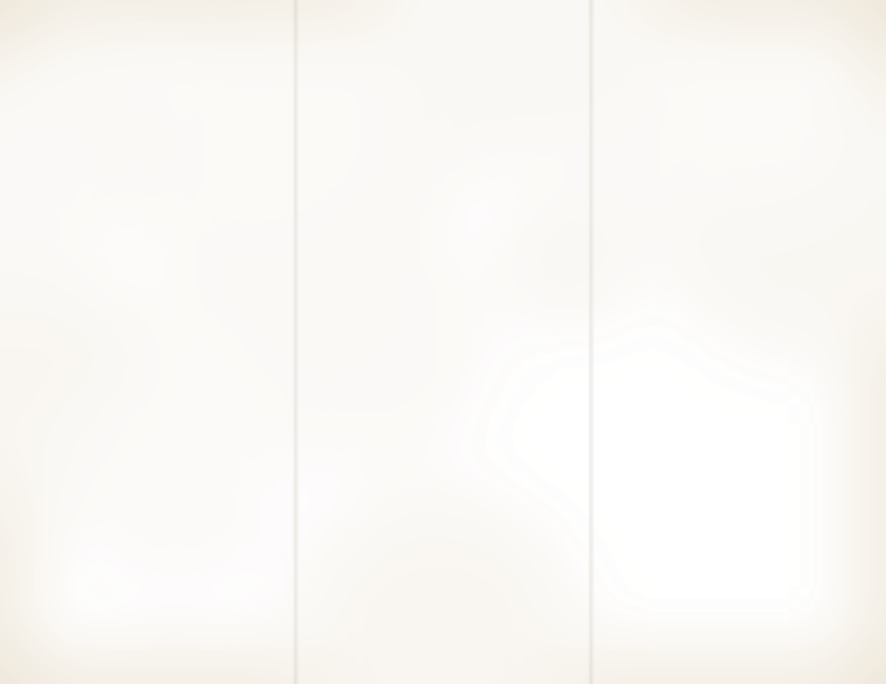

TABLE 1
SCHEDULES
South read down. North read up.
STOP
Trip 1
Daily
Trip 3
Daily
Trip 2
Daily
New York, N.Y.
12:00 MID
9:30
12:30
Newark, N.J.
12:40
10:10
11:55
Philadelphia, Pa.
2:15
11:45
10:15
Wilmington, Del.
3:05
12:35
9:20
Baltimore, Md.
4:40
2:10
7:55
Washington, D.C.
6:05
3:35
6:40
Richmond, Va.
8:50
6:20
3:50
Rocky Mount, N.C.
11:15
8:45
1:30
Florence, S.C.
2:40
12:10
10:00
Savannah, Ga.
6:30
4:00
6:15
Jacksonville, Fla.
9:15
6:45
3:30
Daytona Bch., Fla.
11:20
8:50
1:15
W. Palm Bch., Fla.
2:35
12:05
10:00
Ft. Lauderdale, Fla.
3:40
1:10
8:50
Miami, Fla.
4:30
2:00
8:00
Light face type A.M.Dark face type P.M.
Meal stop, 30 minutes.
Through coaches. About 28 hours end to end.
MEAL STOP
NEW YORK
Terminal lunch counter. Open all night.
Ham and Swiss quarters.65
Leg ham and Swiss cheese on white bread spread with mustard butter, crusts off, cut in four and wrapped in wax paper.
Packed to take on board.
Cinnamon doughnut holes.40
Fried to order and rolled warm in spiced sugar, with a little pot of coffee custard for dunking.
Hot all night.
Franks and beans.85
Sliced franks browned with onion, simmered in baked beans with molasses and mustard. Buttered toast.
FROM THE URN
Coffee.15
Hot tea.15
Milk.20
Cocoa.20
Box lunch for the ride.95
Two ham and Swiss quarters, an apple and a cookie, sacked to carry on board.
MEAL STOPS
FLORIDA
Jacksonville and West Palm Beach.
Coconut fried shrimp1.95
Butterflied with the tails on, dipped in egg, pressed into shredded coconut and crisp crumbs, then fried golden. Sweet red pepper sauce and lime.
Fried to order.
Florida orange cake.35
Whole fruit simmered soft and ground, peel and all, then baked with eggs, sugar and ground almonds. Moist, and no flour.
Baked fresh each morning.
Sunshine cooler.45
Coconut water, pineapple and fresh lime shaken frothy with a spoon of coconut cream, over ice with a pineapple wedge.
White rum on the side, .60. Riders 21 and over.
FRESH SQUEEZED
Orange juice.25
Grapefruit.25
Gift fruit shipped home4.50
Half bushel of oranges and grapefruit, boxed and sent to your door.

